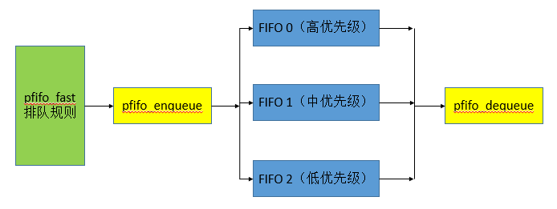

Linux中的服务质量（排队规则）的基本功能是决定如何按顺序接受输入的网络报文，以及使用什么带宽速率接收，并且决定何时以及如何将报文安排进队列中并按照分配的带宽速率进行传输。它主要是根据应用程序需求管理带宽。
下面是Linux支持的排队规则类型：
（1）先进先出（First In First Out, FIFO）
（2）带优先级的先进先出（Priority FIFO, PFIFO）
（3）令牌通流（Token Bucket Flow, TBF）
（4）异步传输模式（Asynchronous Transfer Mode, ATM）
（5）随机早检测（Random Early Detection, RED）
（6）随机公平队列（Stochastic Fair Queueing, SFQ）
（7）可分类排队规则（Class-Bassed Queueing Discipline, CBQ）
（8）通用随机早检测（Generalized GED）
Linux流量控制的基本组件
&emps; （1）排队规则（Queueing Discipline）
（2）类别（Class）
（3）过滤器/分类器（Filter/Classifier）
（4）策略（Policing）
排队规则 Linux上的每个网络设备都有一个排队规则，它控制报文在传输前如何入队和出队。
类别 只有基于类的排队规则才支持类别。可以在传输网络流量之前根据过滤器（IP地址、TCP/IP端口等）将其分为不同的类别，每种类别会根据其优先级来调度报文的出队。
过滤器 过滤器根据特定参数（IP地址、TCP/IP端口等）将报文组织到不同的类别中。
策略 在将网络报文从队列中移出以后，可以对报文设置策略：发送报文、丢弃报文或者发送并标记报文。
Linux中的pfifo_fast排队规则的流程图如下图所示。

Linux中pfifo_fast排队规则的实现
pfifo_fast排队规则是Linux系统中所有网络接口的默认排队规则。pfifo_fast排队规则可以被Linux系统中的任何其他排队规则替换。pfifo_fast包含三个不同的FIFO队列，他们根据优先级将报文加入队列。最高优先级的报文进入FIFO 0，接下来依次是FIFO 1和FIFO 2。
pfifo_fast不是由用户配置的，而是默认硬编码的。报文的优先级是内核分配的，并且根据报文的TOS octet映射到适当的波段中。对于报文入队和出队，pfifo_fast排队规则使用pfifo_fast_enqueue()和pfifo_fast_dequeue()函数。
排队规则数据结构
（1）结构Qdisc struct Qdisc数据结构表示流量排队规则的一个qdisc，它与网络设备相关联。这个排队规则用于在将报文发送到Linux系统的网络接口之前的流量控制（报文排队）。
（2）结构Qdisc_ops struct Qdisc_ops数据结构提供了用于各种操作的控制函数集，这些操作在排队规则上执行。
（3）结构Qdisc_class_ops 这是一个类别操作数据结构，它为某个特定的类别提供了一个控制函数集。
（4）结构cbq_class 该数据结构表示cbq排队规则的流量类型，用于根据为类型分配的带宽调度报文。
参考文献：
TCP/IP架构、设计及应用